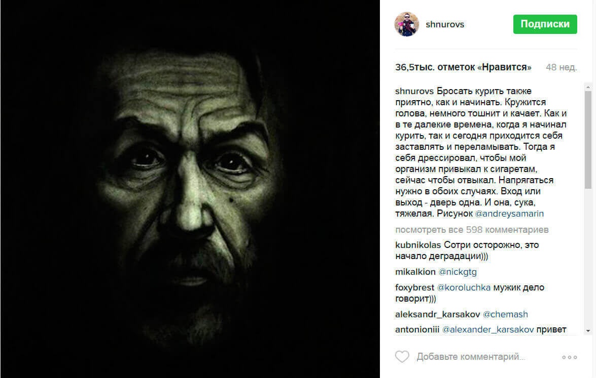
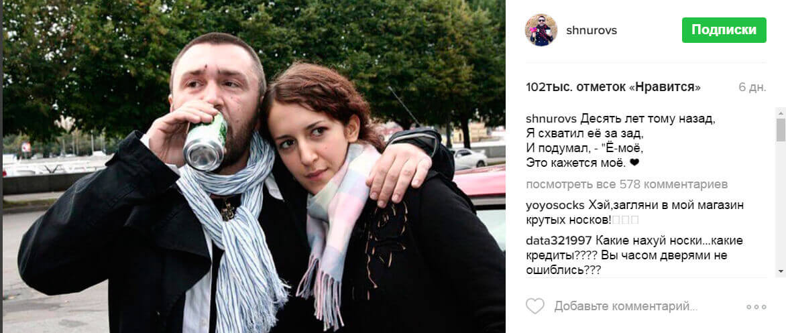
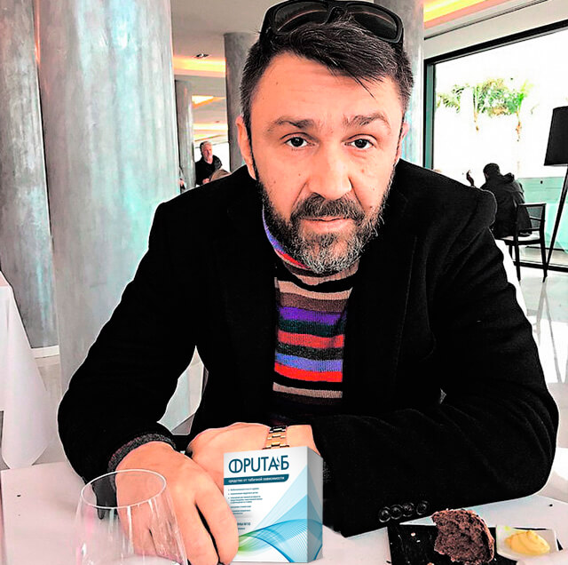
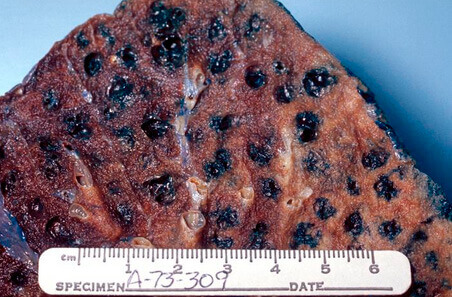
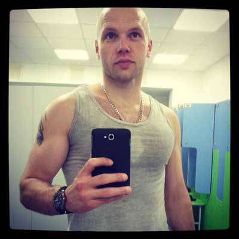
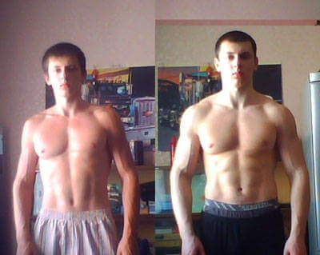
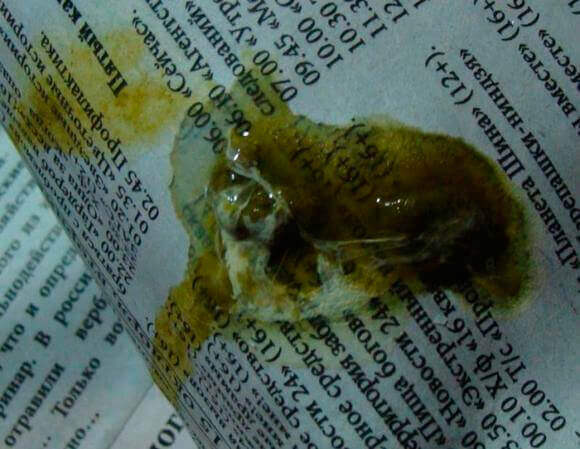

Сергей Шнуров: Бросил курить и снова буду петь в своей группе!
Алиса Новоселова / 01 января, 09:00
Лидер группы “Ленинград” Сергей Шнуров отказывается от курения, потому что ему надоело менять солисток.
“Я хочу вернуть голос, за последние годы я сильно его прокурил. На концертах не слышно, а в записи - очень плохо. Поэтому бросил курить, и надеюсь снова не начну” - комментирует основатель группы “Ленинград”.
В своем инстаграме артист рассказал о том, что бросать курить так же приятно, как и начинать. Но мы решили узнать, что помогло Сергею отказаться от пагубной привычки, и попросить у него совета, как бросить курить всем, кто устал от этого.
- Здравствуйте Сергей! Мы увидели Ваш снимок в instagram и хотим спросить: зачем вы бросили курить? Сигарета была частью Вашего образа. Вы не чувствуете себя без нее неловко?
- Здравствуйте. Рад давать интервью наконец на тему чего-то хорошего. А то вечно одна водка, концерты и скандалы вокруг меня. Итак, зачем я бросил курить? Это глупый вопрос для нормального человека. Любой, кто хочет не сдохнуть к 50 годам, должен задуматься о вреде курения. Вы видели легкие курильщика? Я видел, хоть и давно.
Многим хватает взглянуть на легкие курильщика, чтобы бросить пагубную привычку
- Сергей, но вы говорите, что давно видели легкие курильщика, однако бросили курить только сейчас. Почему?
- Конечно, черные легкие - сильный мотиватор, но видимо не для меня. Я бросил курить по другой причине. Мне надоели девушки-солистки в моей группе. Это весело, но не классика Ленинграда. Но я не могу быть лидирующим солистом, просто потому, что я потерял свой голос из-за курения. На концертах звучит хорошо, но в записи слышно, что с голосом у меня беда. Пошел к врачу, а он осмотрел меня и сказал, что единственный мой шанс вернуть голос: бросить курить.
Из-за прокуренного голоса Сергей Шнуров поет только на концертах
- И как вам это удалось? Люди часто долго не могут бросить курить, а вы враз взяли и бросили, и еще говорите, что это приятно.
- Я думал, что буду страдать точно так же, как и многие другие. Но на самом деле я не стал изобретать велосипед и сразу купил себе средство Фритаб. Слышал о нем уже давно, от своей жены, которая бросила курить еще несколько лет назад, прочитав в интернете про федеральную программу в которой участвует средство и пройдя курс Фритаб. Кстати стоило оно по этой программе, всего 978 ₽.
Шнуров пьет, но не курит!
- И неужели у вас вышло просто взять и бросить? А не тянет?
- Знаете, когда ты действительно хочешь бросить курить, то ты не думаешь о сигаретах. Что касательно физической ломки, то она снимается средством Фритаб. Психологическая ломка снимается если отвлекаться, ну или хорошей мотивацией, как у меня. Так что я без труда бросил, и возвращаться в это состояние пока не хочу.
- Сергей, расскажите нам подробнее об этой федеральной программе?
- С удовольствием! Как выяснилось, ученым удалось не только создать высокоэффективное средство по борьбе с курением, но и сделать его доступным каждому! По информации от производителя, после долгих переговоров, удалось запустить федеральную программу. Цель программы: дать каждому человеку возможность избавиться от никотиновой зависимости, не доводя до ужасных последствий, вне зависимости от его финансового состояния. В рамках этой федеральной программы цена за одну упаковку составляет 978 ₽!
- Очень рады за Вас, Сергей! Надеемся, что скоро вы добьетесь цели и сможете снова быть лидирующим солистом группы Ленинград. Может скажете пару напутственных слов нашим читателям?
- Ребята, не курите. А то х@й стоять не будет. Вот вам и вся моя мотивация! Ну а тем, кто сам не в состоянии, на личном опыте советую средство Фритаб. Работает безотказно. Проверено на себе.
После заявления Шнура о том, что от курения не стоит мужской член, а так же о федеральной программе и цене в 978 ₽, к нам в редакцию посыпались вопросы о том, где достать средство Фритаб по акции и сколько она продлится. Поэтому редактируем материал и даем необходимую информацию.
Комментарий редакции от 04.01.2017
По просьбам читателей сообщаем, что акция пройдет до 20 мая включительно! До окончания акции оригинальный препарат Фритаб можно заказать через официальный сайт всего за 978 ₽.
Комментарии:59
Популярные
Денис, Екатеринбург
Я заколебался ждать, когда Шнур снова САМ запоет! Поставил шкур каких-то вместо себя и прохлаждается. ЛЕНИНГРАД БЕЗ ШНУРА - ГОВНО!
час назад
Алекс, Сызрань
Я кстати тоже слыхал про средство Фритаб. Тесть с ним бросил. А я пока не хочу.
час назад
Юрий, Великий Устюг
Алекс, ЛОХ! Показать еще раз что с легкими бывает?
2 часа назад
Веселый Роджер, Снежногорск
О да, Виталя. Согласен. А можно узнать, где купить Фритаб?
6 часов назад
Виталя, Самара
Офигеть, конечно. Легкие, голос -все херня. Вот когда член не стоит от сигарет - это хреново. Сначала не мог поверить что цена на средство всего 978 ₽! Сделал заказ, о результатах позже напишу, большое спасибо за то, что смогли организовать эту программу. Кстати вот ссылка на официальный сайт.
4 часа назад
Елисей Силыч, Москва
С проблемой курения столкнулся год назад, когда записался в качалку. До этого курил, и все было нормально. Но потом появилась одышка, заниматься стало невозможно. На помощь пришел тренер, порекомендовал мне этот препарат. Через 3 дня интерес к курению просто исчез сам собой, и больше не появлялся. Сейчас спокойно обхожусь без сигарет, активно занимаюсь, полюбил велоспорт, много чего достиг в жизни. И это за каких-то 365 дней! Для качков: вот вам небольшая мотивация:
1 день назад
Олег, Сочи
А по-моему, это все брехня! Что спрей, что капли, что электронные сигареты. Лучший способ бросить курить – это взять пачку сигарет, выбросить в мусорку и больше не покупать их. Проверено, работает!
1 день назад
Данила Багров, Ейск
Чувак, ну ты реально молоток! Или недавно курить начал. Считаю, что твой метод подходит только для новичков или для прожженных монстров. А что делать тем, кто курит 20 лет, недавно начал качаться и обнаружил свою полную импотенцию в этом плане? Ну или кому силы воли не хватает? Тут уж, в борьбе все средства хороши.
1 день назад
Гарик, Мин.Воды
Расскажу свою историю. Курить бросаю уже давно, начинал с никотиновых пластырей, заканчивал жвачками. Все с переменным успехом. Сейчас вот подсел на средство Фритаб от курения. Особо не тянет. Но боюсь, что сорвусь. Не знаю, как у остальных, но у меня после этих платинок почему-то потенция приподнялась слегка! ;)
2 дня назад
Алекс, Махачкала
Жесть) Шнур - убедил Вот если уже такой прожженый курец бросил, то и мне пора. А то что-то реально по утрам мой конский шланг не встает орошать земли моей женщины…
2 дня назад
Н.М., Тверь
ЗАКАЗЫВАЮ! ДАЙТЕ ССЫЛКУ
2 дня назад
Адажио, Нефтеюганск
Мне 16 лет. Качаюсь. Но, блин, курил. Как начал сдуру, так и не смог остановиться до поры до времени. Однажды маман пачку в кармане нашла. Купила мне Фритаб, пока отец не знал. 2 недели ходил, и использовал по два раза в день, зато курить реально не хотелось. До сих пор не курю. А щас о хорошем: вот фотки моих результатов!
3 дня назад
Андрей, Новокузнецк
Бляяя, какой я дебил что курю… Да ну нахер.. А сколько денег уходит, это жесть. Надо купить Фритаб и забыть о проблеме.
3 дня назад
Артем, Ростов-на-Дону
Пацаны, а вы видели какое дерьмо отхаркивается из горла, когда вы курить бросаете? Я начал использовать Фритаб, уже вторую неделю пью, и отхаркиваю такую дрянь! Вот это было в легких!
3 дня назад
Алла, Санкт-Петербург
Мы с мужем поочередно пили. Помогло!
3 дня назад
Капля абсента, Уфа
заказал, пришла недавно посылка.
4 дня назад
Армагедец, Балашиха
Капля, а на каком сайте заказывал? На этом? Я просто однажды зашел в какой-то интернет-магазин, там почти такие же продавались, но дешевле, чем здесь. Заказал вместе с кучей БАДов и жиросжигателями. Все оказалось дешевой китайской подделкой.
4 дня назад
Капля абсента, Уфа
Да, на этом. Но это давняя история, мне друг порекомендовал. У них в Штатах это средство активно раскупают. Особенно спортсмены. Там же не только от курения, но и просто – тонус повышает, выносливость, все дела…
5 дней назад
Армагедец, Балашиха
Понял, СПС.
5 дней назад
Антонио, Норильск
У меня история насчет этих пластинок еще та. Хоть прям на страницы журнала публикуй! Закурил еще в юности, тогда же и запил. Женился, можно сказать, по пьянке. 12 лет коту под хвост. Когда-то в перерывах между запоями заделал двух детишек, где они сейчас без понятия. Жена ушла сразу после рождения второго. Сейчас я ее понимаю, а тогда злился, бухал по-черному. Дай Б-г здоровья родителям, подняли на ноги, закодировали. Из клиники вернулся совсем другим человеком. Появилась мотивация заниматься спортом, интерес к жизни. А вот курить не мог бросить до последнего. Нынешняя жена никогда не курила, нашла рекламу Фритаба этого где-то в интернете. Затянулся разок – как обухом перешибло. ТАК МЕНЯ НЕ ТОШНИЛО НИКОГДА. С горем пополам бросил, больше не курю, не нужны они мне (т-т-т, чтоб не сглазить). Сейчас полностью веду ЗОЖ, читаю ваш журнал, достигаю новых высот!
5 дней назад